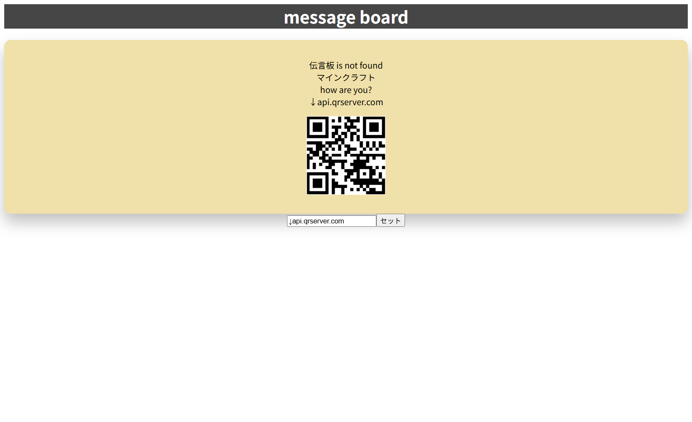
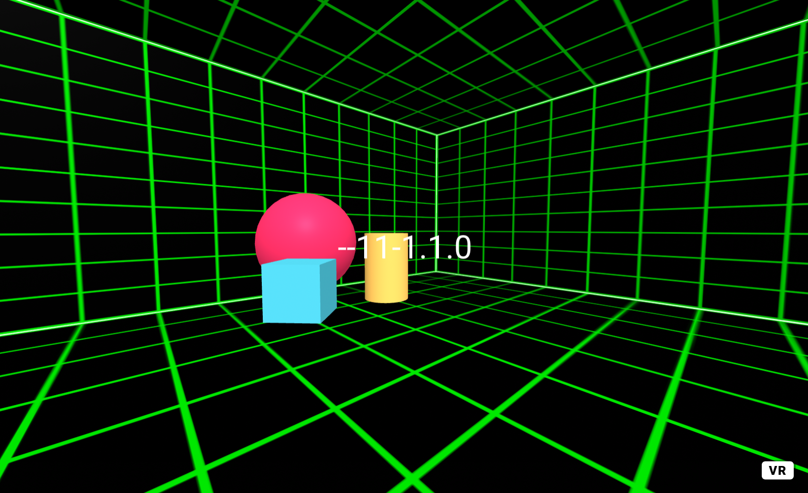

3-2 JavaScript体験：伝言プログラムを作る

伝言板
1.内容
ガイドを参考にプログラムを作成し、htmlとjavascriptを活用し、伝言板を作成した
また、途中からライブラリがなかったため自分でWEBサイトを参考に作成した。
2.感想
自分で試行錯誤したり、エラーと言う障害物に当たりながらも作成するのが楽しかった。
さらにCSSなどでカスタマイズしたりライブラリを探すのがプログラミングしてるみたいだった。
3-3 JavaScriptプログラムの３次元空間の体験

1.内容
3-1を実際にVRで体験した。また3-1のときとは違いボックスの中で丸い玉を
発射できるようになっており楽しめるようになっていた。
2.感想
VRのFPSゲームのように遊ぶことができた。特に玉を発射して避けるゲームを行うのが
がとても楽しかった。またVRが欲しくなった。